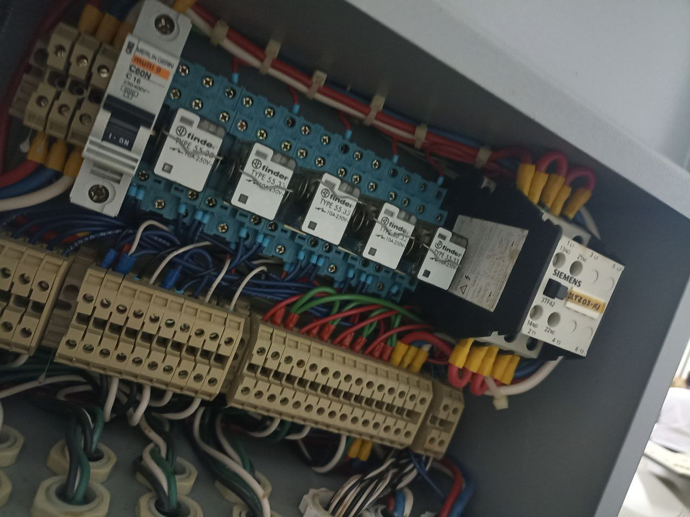
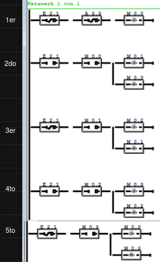
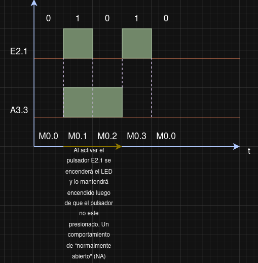
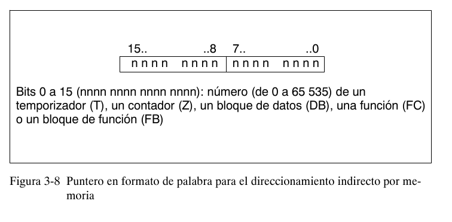
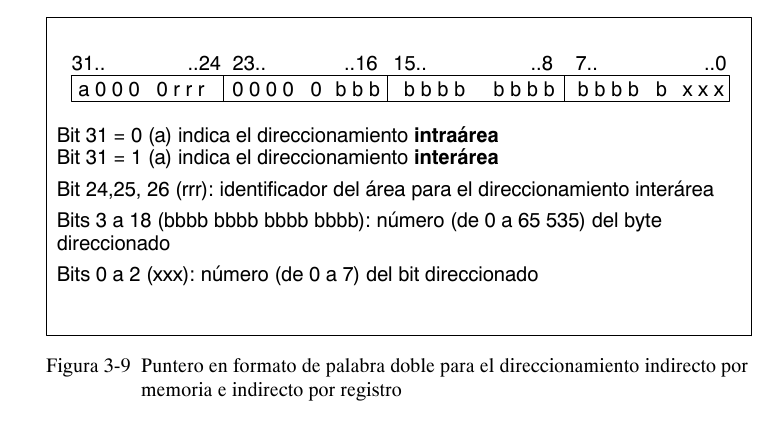
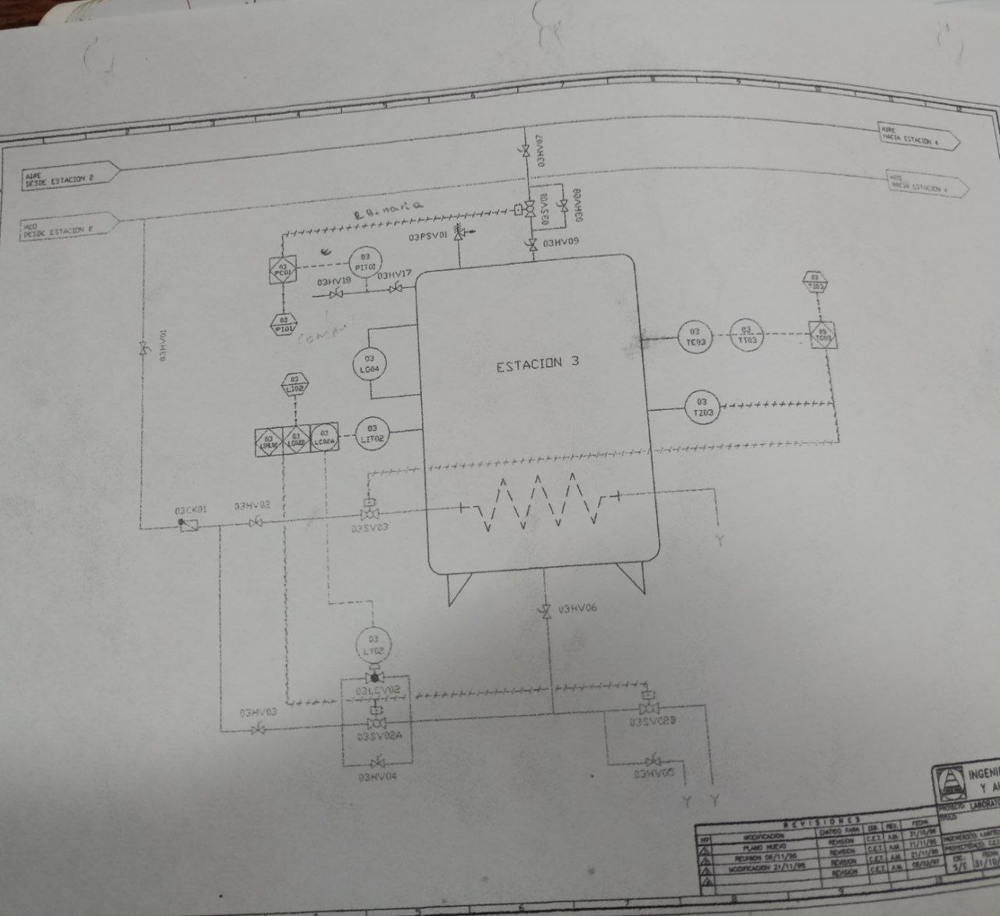

Ingeniería Inversa en PLC Siemens S5/S7: Arquitectura, STEP5, MC7 y Vectores de Seguridad en Entornos Reales
Análisis de bajo nivel de la arquitectura interna de autómatas Siemens, su máquina virtual de ejecución, protocolos industriales, hallazgos en infraestructuras venezolanas, y el fallo estructural crítico: la ausencia total de registros de auditoría que anula cualquier intento de atribución forense.
/índice_de_contenidos +
- Fundamentos del PLC
- Bloques del Programa de Usuario
- AWL: Un Assembly para Autómatas
- Compuertas Lógicas y Operaciones
- Arquitectura de Registros
- Direccionamiento de Entradas/Salidas
- Flip-Flop S/R por Software
- Temporizadores en Siemens S5
- Contadores y Operaciones
- Comparaciones y Saltos
- Transición STEP5 a STEP7
- Tipos de Datos y Direccionamiento
- Direccionamiento Indirecto
- Interfaces de Bus y Protocolos
- Hallazgos en Infraestructuras Venezolanas
- Malware en Entornos ICS
- Ingeniería Inversa del Bytecode MC7
- Shellcode y Binary Exploitation
- La Caja Negra que Nunca se Instaló
- Por Qué los PLCs No Generan Logs
- Casos Globales sin Logs
- Monitoreo Basado en Red
- Perspectivas Futuras
- Conclusiones
01. Fundamentos del PLC
¿Qué es un PLC?
Un Controlador Lógico Programable (PLC) es una computadora industrial que acepta entradas desde emisores de señales, las evalúa de acuerdo a un programa almacenado en memoria y genera salidas para el control de máquinas y procesos. A diferencia de una computadora de propósito general, está diseñado para operar en ambientes hostiles con alta fiabilidad y determinismo temporal. Esta especialización implica una arquitectura interna optimizada para operaciones de control en tiempo real, donde el ciclo de scan (lectura de entradas → ejecución del programa → escritura de salidas) debe completarse en tiempos predecibles.
Tipos de estructuras externas
- Estructura modular: dividido en módulos que realizan funciones específicas. La sujeción se hace sobre carril DIN, placa perforadora o RACK donde va alojado el bus externo de unión de los distintos módulos.
- Estructura compacta: presenta en un solo bloque todos sus elementos: CPU, memorias, entradas, salidas, etc. Ejemplos comunes son los LOGO! de Siemens o los ОВЕН de fabricación rusa, populares en países de la órbita postsoviética por su relación costo-beneficio.
Del laboratorio al campo: una instantánea del hardware real
Antes de sumergirnos en instrucciones AWL y bytecodes, conviene recordar que todo sistema de control tiene una capa física. La imagen a continuación muestra el interior de un tablero de control industrial típico, donde conviven el PLC con los componentes de potencia y protección que le dan interfaz con el mundo real.

Sobre el riel DIN se aprecian un interruptor termomagnético Merlin Gerin (curva C, 16A), una fila de relés de interfaz enchufables Finder capaces de conmutar cargas de hasta 250V, un contactor industrial Siemens serie 3TF42, y las borneras de conexión. Estos elementos actúan como puente entre las salidas electrónicas del PLC y los actuadores de potencia: bombas, válvulas, motores. Sin esta etapa de acondicionamiento, el autómata no podría gobernar el proceso físico.
Lenguaje STEP5
STEP5 es el entorno de programación clásico para la familia Siemens S5. Distingue dos tipos de programas:
- Programa del sistema: instrucciones complejas y arreglos necesarios para el funcionamiento interno del controlador, almacenadas en memoria EPROM. No son afectadas por alteraciones del voltaje principal.
- Programa del usuario: instrucciones para el procesamiento de las señales que ejercen influencia sobre el proceso controlador, almacenadas en memoria RAM.
Lenguajes contenidos en STEP5:
- Listado de instrucciones (AWL): lenguaje de bajo nivel que utiliza nemónicos para representar las instrucciones del PLC. Ofrece control preciso y es muy compacto en uso de memoria. Su sintaxis recuerda enormemente al Assembly de arquitecturas como x86: se trabaja con un operador, un operando y un registro acumulador (RLO) que almacena el resultado de la última evaluación lógica.
- Diagrama de funciones (FUP): lenguaje gráfico que utiliza bloques de funciones. Adecuado para control continuo y procesamiento de señales.
- Diagrama de contacto (KOP): lenguaje gráfico que simula circuitos de relés tradicionales. Adecuado para control discreto y secuencial.
02. Bloques del Programa de Usuario
| Bloque | Nombre | Función |
|---|---|---|
| OB | Bloque de Organización | Controla la secuencia de ejecución del programa. Define puntos de entrada e interrupciones. Esencial para la estructura del programa. |
| PB | Bloque de Programa | Contiene el programa principal de control. Puede llamar a otros bloques de funciones y datos. |
| FB | Bloque de Funciones | Contiene funciones reutilizables que se pueden llamar desde otros bloques. Permite modularizar el programa. |
| SB | Bloque Secuencial | Utilizado para programar secuencias de pasos. Define transiciones entre pasos y acciones asociadas. |
| DB | Bloque de Datos | Almacena datos variables utilizados en el programa. Facilita el intercambio de datos entre diferentes bloques. |
Operandos en STEP5
- Entradas (E) — Interfaces del proceso al autómata.
- Salidas (A) — Interfaces del autómata al proceso.
- Marcas (M) — Memorias para resultados binarios intermedios.
- Datos (D) — Memorias para resultados digitales intermedios.
- Temporizadores (T) — Memorias para la realización de temporizadores.
- Contadores (Z) — Memorias para la realización de contadores.
- Periferia (P) — Interfaces del proceso al autómata.
- Constantes (K) — Valores numéricos fijos.
03. AWL: Un Assembly para Autómatas
La sintaxis de AWL guarda un paralelismo notable con el Assembly de arquitecturas como x86. Se compone de un operador (la instrucción), un indicador de operando (el tipo de dato sobre el que se opera) y un operando (la dirección o valor concreto). El resultado de cada operación lógica se almacena en el registro RLO (Result of Logic Operation), que cumple una función análoga al registro EAX en x86: actúa como acumulador donde se deposita el resultado de la última evaluación.
direccion_relativa : operacion indicador_operando parametro
// Ejemplo con marcas de memoria y entradas:
U M 0.5 // AND entre RLO y el bit 5 del byte 0 de marcas
U M 254.0 // AND con el bit 0 del byte 254 de marcas
O // OR sin operando: une los dos extremos
U E 2.1 // AND con la entrada 2.1
U E 2.2 // AND con la entrada 2.2
= A 3.2 // Asigna el RLO a la salida 3.2
En el ejemplo anterior, el operando M hace referencia a las "marcas de memoria", un espacio en la memoria interna del PLC. La sintaxis M [byte].[bit] es notable: el número a la izquierda del punto representa el byte de la dirección y el número a la derecha representa el bit dentro de ese byte (0-7). En el PLC utilizado para las pruebas prácticas, se dispone de un máximo de 255 bytes de marcas (2048 bits).
El entorno de programación STEP5 en acción
Para entender cómo se materializan estas instrucciones en un proyecto real, la siguiente captura muestra el software de programación de la familia Simatic S5. Es el tipo de entorno —ejecutado aquí sobre una herramienta compatible con Windows como PG-2000— que aún hoy se utiliza para mantener sistemas heredados en plantas industriales.

En la imagen se distinguen los bloques de organización y función (OB1, PB25, FB1, FB2) con código escrito íntegramente en AWL. Las instrucciones aparecen en alemán —herencia de la documentación original de Siemens— y se observan operaciones de incremento (INC) y decremento (DEC) directamente sobre bytes de memoria (MB0). Esta forma de programar, donde el desarrollador manipula direcciones de memoria con absoluta transparencia, es la que convierte al AWL en un lenguaje tan poderoso como peligroso: un simple puntero mal calculado puede corromper regiones enteras del programa.
A diferencia de las marcas, cuyas direcciones son lógicas y definidas por el fabricante, el direccionamiento de entradas y salidas depende de la ranura física en el RACK donde se encuentre el módulo de E/S. En el S5 esta asignación es fija: ranura 0 = byte 0, ranura 1 = byte 1, etc. En versiones más modernas como el S7, esta correspondencia puede configurarse por software.
La instrucción de asignación = cumple una función similar al RET en x86: copia el último resultado almacenado en el RLO y lo transfiere al operando designado, ya sea una salida física o una posición de memoria.
Instrucciones de fin de bloque
- BE — Última instrucción obligatoria en todos los OB, PB, SB y FB.
- BEB — Fin de bloque si al momento de su ejecución RLO = 1.
- BEA — Fin de bloque con independencia del RLO.
El RLO (Resultado Lógico de Operación), denominado VKE en la documentación alemana, es el equivalente funcional a RAX/EAX en x86_64. Almacena el resultado de cada operación lógica y es sobrescrito por cada nueva instrucción que produce un resultado booleano. Esta característica de acumulador es fundamental para entender el flujo de ejecución del programa.
04. Compuertas Lógicas y Operaciones
AND (AWL = U)
- Refleja contactos en serie.
- Multiplicación bit a bit entre RLO y el operando especificado.
- Negación: UN.
- Operandos posibles: E, A, M, DBX, DIX, L, T, Z.
- Registros afectados: RLO, STA.
OR (AWL = O)
- Refleja contactos en paralelo.
- Suma bit a bit entre RLO y el operando especificado.
- Negación: ON.
- Operandos posibles: E, A, M, DBX, DIX, L, T, Z.
- Registros afectados: RLO, STA.
XOR (AWL = X)
- Equivalente a una evaluación de "es distinto de". Su negación equivale a "es igual a".
- Negación: XN.
- Registros afectados: RLO, STA.
Agrupación con paréntesis: las operaciones encerradas entre paréntesis se evalúan antes que la operación que las precede.
O E 2.1
O E 2.2
)
U E 2.5
// Primero evalúa OR entre E2.1 y E2.2, luego AND con E2.5
OR sin operandos: permite evaluar extremos de forma independiente para luego encontrarse en una evaluación OR. Es una construcción sintáctica particularmente útil para simplificar expresiones complejas.
U E 2.2
O // Sin operando: une los dos extremos evaluados
U E 2.3
U E 2.4
El S5 no posee instrucciones para la detección de flancos de subida/bajada. El S7 sí incorpora esta capacidad de forma nativa mediante las instrucciones FP (flanco positivo) y FN (flanco negativo). En S5, la detección de flancos debe implementarse manualmente mediante lógica de muestreo con marcas de memoria, lo que introduce complejidad adicional.
05. Arquitectura de Registros
| Bit | Registro | Función |
|---|---|---|
| 0 | ER | Indica si la instrucción es la primera de una cadena lógica (inhibida). En este estado, la consulta se almacena directamente en RLO. |
| 1 | RLO | Registro donde se realizan las operaciones a nivel de bit. Almacena el resultado lógico (acumulador). |
| 2 | STA | Gestión de errores. |
| 3 | OR | Requerido para el proceso AND delante de OR. Indica si la operación AND ha dado valor 1. |
| 4 | OV | Se activa si durante una operación aritmética o de comparación de coma flotante se produce un error de desbordamiento, operación no admisible o relación incorrecta. |
| 5 | OS | Se activa a la par de OV. Indica que previamente se ha producido un error. Solo cambia a 0 con la instrucción SPS o al alcanzar el fin de módulo. |
| 6-7 | A0, A1 | Códigos de condición: resultados de operaciones aritméticas, comparaciones, operaciones digitales, bits desplazados. |
| 8 | RB | Resultado binario. Permite interpretar el resultado de una operación de palabras como resultado binario e integrarlo en la cadena lógica. |
06. Direccionamiento de Entradas/Salidas
Las direcciones de entrada/salida se estructuran de la siguiente manera: el número de la izquierda representa el byte y el número de la derecha representa los bits pertenecientes a este byte (máximo 7, ocupando 8 posiciones desde el 0 al 7).
En la configuración usada en el curso, el 2do byte designa los 8 switches de entrada (E 2.0, E 2.1, ..., E 2.7) y los 8 LED's de salida están en el byte 3 (A 3.0, A 3.1, ..., A 3.7).
El byte de un módulo de entrada/salida depende de su ubicación en el RACK. La dirección es orientada a bytes: Ranura 0 = byte 0, Ranura 1 = byte 1, Ranura 2 = byte 2, y así sucesivamente. En versiones más recientes como el S7, esta asignación puede configurarse mediante el software de programación.
Marcas de Memoria (M)
Las direcciones de marcadores no dependen de la dirección física en el RACK sino de la configuración interna del PLC. Podemos pensar en ellas como un arreglo de 255 bytes que actúan como "flags" o variables para almacenar el estado de alguna operación. Hablamos de un espacio de 2048 bits disponibles en un área de la memoria interna para almacenar datos binarios intermedios.
Un caso de uso interesante es la creación de Flip-flop S/R lógicos a nivel de software, sin necesidad de componentes físicos independientes. Esto permite recordar si un dispositivo está encendido o apagado, o memorizar el estado del paso anterior en una secuencia.
07. Ejemplo: Mando Condicional (Flip-Flop S/R por Software)
Implementación de un pulsador que enciende/apaga un LED utilizando marcas de memoria para detectar flancos:
UN E 2.1
UN A 3.3
S M 0.0
// 2do Estado: flanco de subida detectado
U E 2.1
U M 0.0
S M 0.1
R M 0.0
// 3er Estado: pulsador liberado
UN E 2.1
U M 0.1
S M 0.2
R M 0.1
// ... continúa el ciclo de muestreo ...
// Evaluación final: encender o apagar LED
O M 0.1
O M 0.2
= A 3.3
La lógica del programa depende del segmento de muestreo que se hace en el 2do y 3er estado, que es cuando el pulsador emite un alto. Si el LED ya está encendido, el 1er estado almacenará 0 en M0.0, provocando una reacción en cadena de ceros hasta apagar el LED.


08. Temporizadores en Siemens S5
| Tipo | Nemónico | Comportamiento |
|---|---|---|
| S_EVERZ | SE | Retardo a la conexión. La salida se activa solo después de transcurrido el tiempo TV, siempre que la entrada S permanezca activa. Si S se desactiva antes, el temporizador se reinicia. |
| S_SEVERZ | SS | Retardo a la conexión con memoria. Una vez activada la salida, permanece activa incluso si la entrada S se desactiva. Requiere entrada de reset (R) para reiniciar. |
| S_IMPULS | SI | Genera un pulso de salida de duración definida (TV) cuando la entrada S se activa. La duración del pulso es independiente de la duración de la señal de entrada. |
| S_VIMP | SV | Pulso prolongado. Solo genera el pulso si la señal de entrada se mantiene activa durante un tiempo mínimo. |
| S_PULS | SP | Genera un pulso de duración definida (TV). La duración es independiente de cuánto tiempo se mantenga activa la entrada. |
| S_AVERZ | SA | Retardo a la desconexión. La salida se activa inmediatamente con S y comienza a contar TV cuando S se desactiva. La salida se desactiva después de transcurrido TV. |
Constante de tiempo (KT):
// 1 (izquierda) = valor de tiempo
// 2 (derecha) = base de tiempo: 0=0.01s, 1=0.1s, 2=1s, 3=10s
// Resultado: 1 segundo
Los temporizadores disponibles dependen del modelo: CPU-90: máximo 32, CPU-95: máximo 128.
Gran parte de la documentación disponible sobre temporizadores corresponde al S7, que incorpora registros e instrucciones que no existen en los S5 utilizados en prácticas. Esto provoca errores de sintaxis al intentar ejecutar código de S7 en un S5 real. La solución práctica fue recurrir a un emulador de S5 para realizar pruebas, ya que el simulador PC Simu descartaba la instrucción de transferencia que toma el contenido de AKKU1 y lo envía a memoria.
09. Contadores y Operaciones de Cómputo
Permiten contar y/o descontar impulsos entre 0 y 999. Parámetros:
- Z0 ... Zmax — Número de contador (CPU-90: 128).
- ZV — Incrementar (no supera 999).
- ZR — Decrementar (no decrementa por debajo de 0).
- S — Carga el valor inicial en el contador.
- KZ xxx — Valor inicial.
- R — Resetea el valor del contador.
10. Operaciones de Comparación y Saltos
Comparaciones
Un comparador relaciona dos datos del mismo formato (BYTE o WORD). Tipos disponibles:
- != F — Desigualdad
- > F — Mayor que
- < F — Menor que
- >= F — Mayor o igual que
- <= F — Menor o igual que
En S5, F hace referencia a números enteros (Integer 16 bits). En S7 esto cambia por I (mnemónicos en inglés). También existen: D (Double Integer 32 bits) y G (Floating Point 32 bits IEEE-FP).
Instrucciones de Salto (Jump)
| Instrucción | Condición |
|---|---|
| SPA | Salto Incondicional |
| SPB | Salta si RLO = 1 (True) |
| SPN | Salta si RLO = 0 (False) |
| SPZ | Salta si AKKU1 = 0 |
| SPP | Salta si AKKU1 > 0 |
| SPM | Salta si AKKU1 < 0 |
| SPO | Salta si OV = 1 (desbordamiento) |
| SPS | Salta si OS = 1 (error persistente) |
| SPR | Salta si BR = 1 (operación aritmética sin errores) |
En las pruebas realizadas, SPA y SPB son las únicas instrucciones de salto que funcionan consistentemente en el hardware disponible. Las demás requieren validación adicional.
11. Transición de STEP5 a STEP7
Es importante aclarar que S5-95 es comparable con S7-200 (ambos de gama baja). La transición real es del S5-95 usado en el curso al S7-300 usado en la mayoría de simulaciones y proyectos modernos.
Diferencias de hardware
| Característica | S5-95 | S7-300 |
|---|---|---|
| RAM | 16 KB (STEP5) + 64 KB (ejecución) | Mayor capacidad, dependiente del modelo |
| Puerto de programación | AS511 | Interfaces MPI |
| Memoria de trabajo | RAM | RAM |
| Memoria de carga | RAM o EPROM | RAM, Flash o tarjeta de memoria |
| Datos locales | No existen | Sí (datos temporales dentro de un bloque) |
| Datos remanentes | Menor capacidad | Mayor capacidad de conservación ante pérdida de energía |
12. Tipos de Datos, Constantes y Direccionamiento en STEP7
Formatos de constantes: equivalencia S5 → S7
| Formato S5 | Ejemplo S5 | Formato S7 | Ejemplo S7 | Tipo de dato |
|---|---|---|---|---|
| KB | L KB 10 | B#16# | L B#16# A | BYTE (8 bits) |
| KF | L KF 10 | — | L 10 | INT (16 bits) |
| KH | L KH FFF | W#16# | L W#16# FFFF | WORD (16 bits) |
| KM | L KM 1111111111111111 | 2# | L 11111111_11111111 | WORD (16 bits) |
| KY | L KY 10,12 | B# | L B#(10,12) | 2xBYTE (8+8 bits) |
| KT | L KT 10.0 | S5TIME# | L S5TIME# 100ms | TIME (S5TIME) |
| KZ | L KZ 30 | C# | L C#30 | COUNTER (BCD) |
| DH | L DH FFFF FFFF | DW#16# | L DW#16#FFFF_FFFF | DWORD (32 bits) |
| KC | L KC WW | ' xx ' | L ' WW ' | CHAR (8 bits por carácter) |
| KG | L KG +234 +09 | REAL | L +2.34 E+08 | REAL (32 bits, coma flotante) |
Direccionamiento completo de operandos de datos
Novedad en STEP7: indicación conjunta del bloque de datos y del operando. Esto no era posible en S5. No se permite mezclar direccionamiento absoluto y simbólico en una misma instrucción.
L DB_MOTOR.REVOLUCIONES
// DB_MOTOR = símbolo del DB 100 en la tabla de símbolos
// REVOLUCIONES = operando declarado dentro del bloque de datos
Situaciones en las que se sobrescribe el registro DB:
- Acceso a datos con direccionamiento completo.
- Llamada a un FB (sobrescribe el registro DB del bloque invocante).
- Llamada a un FC que transfiere un parámetro de tipo compuesto (STRING, ARRAY, STRUCT, UDT).
- Asignación a una FC de un parámetro depositado en un DB.
- Direccionamiento de un parámetro de entrada/salida de tipo compuesto en un FB o FC.
13. Direccionamiento Indirecto
Formato de los punteros
En S5 el puntero para la operación indizada de elaboración ocupa una palabra. En S7 los punteros pueden tener dos formatos: palabra y palabra doble.



Direccionamiento indirecto por memoria
Corresponde al direccionamiento indirecto de S5. El operando indica la dirección del valor que deberá procesar la operación. El puntero se puede encontrar en: Marcas (M), Bloque de datos (DB), Bloque de datos de instancia (DI), Datos locales (L). Una ventaja fundamental de este mecanismo es que permite modificar el operando de la instrucción dinámicamente durante la ejecución del programa.
L P#8.7
T MD 2
U E [MD 2]
= A [MD 2]
// Lee la entrada E8.7 y escribe su estado en la salida A8.7
14. Interfaces de Bus y Protocolos Industriales
Buses de campo
Sistemas de comunicación ideados para conectar sensores, actuadores y otros dispositivos E/S a un PLC:
- Profibus: estándar industrial para datos discretos y analógicos.
- Profinet: basado en Ethernet, ideal para aplicaciones en tiempo real.
- DeviceNet: utilizado en automatización de fábricas.
- CANopen: popular en aplicaciones de control de movimiento.
- AS-Interface: diseñado para conectar sensores y actuadores binarios.
Protocolos de comunicación
- Modbus RTU / ASCII / TCP/IP: protocolo serial ampliamente utilizado para comunicación entre PLCs, sensores y actuadores. Es importante señalar que Modbus carece de autenticación por diseño, lo que lo convierte en un vector de ataque significativo en entornos no segmentados.
- DNP3 (Distributed Network Protocol 3): comunicación entre equipos en sistemas de automatización de redes eléctricas y agua. Común en subestaciones eléctricas.
- ICCP (Inter-Control Center Communications Protocol): diseñado para comunicación entre centros de control en sistemas de energía eléctrica. Permite intercambio de datos en tiempo real.
- OPC (Open Platform Communication): estándar de interoperabilidad para el intercambio de datos entre dispositivos industriales de diferentes fabricantes. Utiliza DCOM para conectarse a servidores OPC dentro de una red ICS.
- WORLDFIP: bus de campo industrial para comunicación entre dispositivos en sistemas de automatización.
Sistemas SCADA, DCS y HMI
- ALSPA P320: Sistema de Control Distribuido presente en plantas de generación de energía e instalaciones industriales de gran escala.
- ABB 800xA: Sistema de Control Distribuido con alta capacidad de procesamiento. Se programa mediante Control Builder M.
- Wonderware SCADA: plataforma de supervisión y control con librerías de comunicación para PLCs S7, programables sobre C# o Java.
- PascalSCADA: alternativa open-source para sistemas SCADA que permite comunicación con PLCs Siemens vía Ethernet, Modbus TCP/RTU, y extensibilidad mediante clases personalizadas en Lazarus/Free Pascal.
- HMI Magelis (ahora Harmony): interfaces hombre-máquina con pantallas táctiles, configurables con EcoStruxure™ Operator Terminal Expert.
15. Hallazgos en Infraestructuras Venezolanas
Toda la información presentada en esta sección proviene de fuentes públicas: trabajos de grado universitarios, documentos académicos, reportes de organismos oficiales y artículos de divulgación. El objetivo es estrictamente académico y de concienciación sobre la importancia de la seguridad en infraestructuras críticas.
CorpoElec y el ecosistema Schneider Electric
Investigaciones basadas en documentos públicos indican que CorpoElec utiliza PLCs de la serie Schneider Electric Modicon Quantum en sus sistemas de control. Estos dispositivos, programados mediante Unity Pro, son ampliamente utilizados en el sector eléctrico venezolano.
Un hallazgo particularmente relevante es la existencia de una vulnerabilidad en el Modicon Quantum que permite paralizar la CPU sin autenticación previa si se tiene acceso al puerto Modbus TCP. El aviso ICS-ALERT-12-020-03B de CISA documenta esta falla, y existen fundadas dudas sobre si fue efectivamente parcheada a tiempo en las infraestructuras afectadas. Adicionalmente, se han reportado configuraciones que exponían acceso remoto a estos sistemas, aunque la veracidad de estos reportes no ha sido confirmada de forma independiente.
Schneider Electric también ha enfrentado vulnerabilidades significativas en su Serial Modbus Driver (ModbusDrv.exe), un componente que se activa al conectar una PC al PLC vía puerto serial. El desbordamiento de búfer basado en pila identificado por Risk-Based Security afectó a 11 productos, incluyendo Unity Pro, TwidoSuite, PowerSuite, SoMove, SoMachine y OPC Factory Server. Esta vulnerabilidad era explotable remotamente.
Venalum: 15 años de historia tecnológica documentada
Las plantas de procesamiento de aluminio de Venalum representan un caso de estudio singular sobre cómo la documentación académica puede revelar la evolución tecnológica de una infraestructura crítica. Un trabajo de grado de 2016 documenta el uso de PLC S7-400 junto con Wonderware SCADA en los sistemas de control de la planta. Lo más significativo es que en 2019 se iniciaron oficialmente las migraciones de STEP5 a STEP7, lo que confirma que hasta fechas muy recientes se seguían utilizando PLCs S5 en la infraestructura de producción.
Un trabajo de grado anterior, fechado en 2006, documenta el sistema de control de los hornos de retención implementado con un PLC S7-300, utilizando OPC Simatic Net como servidor de comunicaciones y MATLAB 7 como cliente. La conexión OPC con MATLAB es particularmente interesante porque sugiere un procesamiento de datos industriales con herramientas de computación científica.
En 2021, otro trabajo de grado sobre el mismo horno de retención confirma que el S7-300 seguía en operación 15 años después, manteniendo probablemente la misma lógica de comunicación con MATLAB. Aunque el trabajo menciona una aplicación Android —que requeriría algún módulo inalámbrico—, esta se menciona una sola vez, lo que sugiere que nunca se implementó y fue incluida para dar formato académico al documento. La conclusión es clara: el sistema ha recibido mantenimiento sin cambios arquitectónicos significativos en más de una década y media.
El plano que lo cuenta todo: cuando un P&ID es mapa y confesión
Los trabajos de grado no solo enumeran equipos; incluyen diagramas de ingeniería que detallan la topología del proceso. La imagen a continuación es un P&ID (Diagrama de Tuberías e Instrumentación) real, fechado entre 1996 y 1997, correspondiente a una estación de proceso con tanque, serpentín de calentamiento y múltiples instrumentos.

En el diagrama se leen con claridad las líneas de flujo —"AIRE DESDE ESTACION 2", "H2O DESDE ESTACION E"—, la instrumentación con simbología ISA (válvulas solenoides, transmisores de nivel LIT02, sensores de temperatura TE03, indicadores de presión) y el cajetín de revisiones con fechas de mediados de los noventa. Este plano es el mapa de vuelo para un atacante: le dice qué variables se miden, qué actuadores se controlan y cómo está interconectado el sistema. Y sin embargo, en la misma tesis que incluye este diagrama, no hay un solo párrafo sobre cómo registrar quién modificó esas variables.
Implicaciones de seguridad de la documentación pública
Existe un debate legítimo sobre si los trabajos de grado y tesis universitarias que documentan infraestructuras críticas deberían ser de acceso público. Literalmente, con solo recopilar trabajos de grado, un atacante podría formarse una idea detallada de todas las tecnologías presentes en una empresa. Sin embargo, el problema de fondo no es la disponibilidad de esta información —una nación con recursos de inteligencia podría obtenerla por otros medios—, sino la falta de personal calificado en seguridad informática dentro de estas organizaciones.
La realidad es que en muchos casos no existe un modelo de amenazas formalmente definido, y la inversión en seguridad suele producirse después del incidente, no antes. Esta aproximación reactiva es particularmente peligrosa en entornos OT/ICS, donde una interrupción puede tener consecuencias físicas y económicas catastróficas. La misma lógica de descuido interno —invertir en el perímetro y olvidar la auditoría del núcleo— es la que permite vulnerabilidades como las documentadas en la auditoría a la Web API financiera con IDOR por validación incompleta de JWT. El patrón se repite: sin logs ni autorización interna, el sistema está ciego.
16. Malware y Tácticas de Compromiso en ICS
Havex RAT y el vector OPC
Havex es un Remote Access Tool documentado en Malpedia que introdujo una táctica particularmente insidiosa: una vez instalado en un sistema, analizaba la red en busca de dispositivos SCADA o ICS. Para ello, aprovechaba el estándar OPC (Open Platform Communication), un protocolo de comunicación universal utilizado por componentes ICS de diversos fabricantes que facilita la conectividad abierta y la interoperabilidad.
Havex utilizaba el Modelo de Objetos de Componentes Distribuidos (DCOM) para conectarse a servidores OPC dentro de la red ICS y recopilar información detallada: CLSID, nombre del servidor, ID del programa, versión de OPC, información del proveedor, estado de ejecución, número de grupos y ancho de banda del servidor. La entrada inicial era un simple email, tras lo cual el malware realizaba un sondeo en busca de la presencia del protocolo OPC y comenzaba a enumerar los dispositivos de la infraestructura.
Panorama de amenazas ICS
El ecosistema de amenazas para sistemas de control industrial incluye casos emblemáticos como Stuxnet (dirigido a centrifugadoras iraníes), Triton (ataque a sistemas de seguridad instrumentada), Pipedream (toolkit modular para PLCs) y Havex (reconocimiento vía OPC). Estos casos demuestran que los atacantes han desarrollado capacidades sofisticadas para comprender, enumerar y comprometer entornos OT.
En la mayoría de los casos documentados, el vector de entrada inicial es un simple email. A partir de ahí, el malware realiza un reconocimiento lateral buscando protocolos ICS como OPC, Modbus o Profinet. Esta simplicidad aparente es engañosa: la sofisticación está en el conocimiento del dominio OT que demuestra el malware una vez dentro de la red.
17. Ingeniería Inversa del Bytecode MC7
La arquitectura subyacente: ¿VM o microprogramación?
Una de las cuestiones más fascinantes que emergen del estudio de los PLCs Siemens es la naturaleza de su arquitectura de ejecución. Los opcodes de las instrucciones AWL no se ejecutan directamente sobre el procesador físico (ARM o MIPS, según el modelo), sino que corren sobre una capa intermedia que algunos investigadores denominan "VM" o "pseudo-CPU".
Sin embargo, existe un debate sobre si esta capa constituye realmente una máquina virtual en el sentido tradicional o si se trata más bien de una arquitectura microprogramada. El concepto de microprogramación, definido por Matloff y Franklin, describe un escenario donde una máquina A (el CPU real) ejecuta un programa intérprete almacenado en ROM que le permite comportarse como una máquina B (la que entiende el set de instrucciones AWL). La máquina A está especialmente adaptada para esta tarea y es muy rápida, y al programa intérprete se le denomina firmware o microprograma.
Bajo esta óptica, MC5 (en S5) y MC7 (en S7) serían los microprogramas que permiten que un procesador ARM/MIPS se comporte como un CPU especializado en automatización industrial. Esta interpretación es consistente con la observación de que el objetivo final para lograr un impacto significativo en seguridad es trascender el limitado conjunto de instrucciones AWL y alcanzar el procesador real.
Herramientas de reversing: JEB Decompiler
JEB Pro, de PNF Software, ofrece soporte específico para PLC Siemens S7 con capacidad para decompilar bytecode MC7 a STL (AWL). Los screenshots de la herramienta revelan información crucial sobre la codificación de instrucciones:
- La instrucción de carga L es representada por el opcode 0xFB.
- La instrucción de transferencia T es representada por el opcode 0x7E.
- La mayoría de las instrucciones, incluyendo sus operandos, tienen una longitud máxima de 4 bytes, lo que sugiere un formato de instrucción de longitud fija o semi-fija.
Del código AWL al hexdump: el laboratorio de reversing
Para entender cómo se traduce el AWL a nivel de bytes, monté un entorno de análisis sobre una máquina virtual Windows 7 corriendo en QEMU/KVM. La siguiente captura muestra la correlación entre el volcado hexadecimal del firmware y las instrucciones que ejecuta el PLC.

En la ventana superior izquierda se ejecuta cat test.wld | hexdump -C, mostrando el volcado hexadecimal del archivo de firmware. A la derecha, la herramienta de desensamblado rizin analiza el código estructurado y localiza direcciones simbólicas como I 124.0 (entrada) y Q 124.0 (salida). En la ventana inferior, el software WinSPS-S7 V6 exhibe el bloque de función FC23 programado en AWL: la lógica mínima U E 124.0 seguida de = A 124.0. Esta práctica de correlacionar binario con nemónicos es exactamente el tipo de arqueología digital que se necesita para desarrollar shellcode funcional sobre entornos MC7. Es la misma metodología de reversing que aplico en el análisis de malware PE con Capstone y x64dbg, pero trasladada al dominio OT.
18. Exploración de Shellcode y Binary Exploitation en PLCs
Del reversing a la explotación
El estudio de la codificación de instrucciones MC7 tiene aplicaciones prácticas inmediatas en seguridad ofensiva/defensiva. Entre los objetivos de investigación se encuentran:
- Comprender cómo el compilador prepara el firmware para el MC7 y cómo se codifican las instrucciones.
- Estudiar la estructura del binario internamente, análogo a lo que sería el formato PE en Windows.
- Desarrollar shellcode para PLC Siemens S7, entendiendo qué tanto cambia la codificación entre versiones y marcas.
- Realizar prácticas de binary exploitation sobre el entorno MC7.
Puntos de entrada para fuzzing
Los vectores potenciales para realizar fuzzing en un entorno PLC incluyen:
- Sensores: los datos provenientes de sensores conectados a los módulos de entrada representan un flujo de datos que podría ser manipulado.
- Protocolos de comunicación: Modbus TCP/RTU, Profinet, OPC y otros protocolos constituyen interfaces expuestas a la red que procesan datos potencialmente maleables.
- Software de programación: las herramientas como TIA Portal, WinSPS S7 o PG2000 son vectores adicionales si un atacante logra comprometer la estación de ingeniería.
Limitaciones de los simuladores
Un obstáculo significativo es que los simuladores disponibles (PC Simu, WinSPS S7, PG2000) se centran en simular la VM de MC7 sin modelar cómo se traducen los bytecodes a instrucciones ARM/MIPS en el hardware real. Esto significa que la validación de shellcode a nivel de procesador solo puede realizarse con equipo físico. La filosofía de los fabricantes de mantener cerradas las especificaciones de sus CPUs agrava esta dificultad.
No existe una herramienta que funcione como un debugger paso a paso para PLCs, mostrando en tiempo real el estado de los registros (AKKU1, AKKU2, RLO, VKE) y la instrucción en ejecución. Las versiones más recientes de los entornos de programación han abandonado el AWL en favor de lenguajes de alto nivel, sin ofrecer una visualización del equivalente en código de bajo nivel. Esta opacidad deliberada dificulta enormemente la investigación de seguridad.
19. La Caja Negra que Nunca se Instaló: Por Qué las Plantas No Pueden Contar su Propia Historia
El hallazgo en las tesis universitarias
La investigación de este post comenzó por curiosidad técnica: entender la máquina virtual que ejecuta bytecode MC7, cómo se codifican las instrucciones AWL y qué vectores de ataque pueden explotarse desde la red. Pero al cruzar ese trabajo con tesis de grado que detallan sistemas de control en infraestructuras reales, surgió un hallazgo más urgente que cualquier exploit de Modbus.
Revisé múltiples trabajos académicos accesibles en repositorios universitarios venezolanos como el de la Universidad Central de Venezuela (saber.ucv.ve). Todos describen con lujo de detalles arquitecturas de control: marcas y modelos de PLC, planos de red, configuración de tópicos OPC, protocolos de comunicación, listados de tags, estrategias de redundancia. Información suficiente para que un atacante dedicado se forme una idea muy precisa del sistema.
Pero en ninguno de esos documentos —ni uno solo— aparece un sistema de registro centralizado de eventos. No hay descripción de cómo se capturan los comandos del operador. No hay un párrafo sobre retención de logs. No existe la figura de un SIEM industrial ni nada que se le parezca.
En cambio, aparece esto: el registro de fallas se hace a mano, en planillas Excel que cada ingeniero guarda en su computadora personal. Cito textual de uno de los trabajos: "cada Ingeniero de planta guarda en su computadora las data-paro que ha realizado durante todo el año".
El eslabón perdido: cuando la HMI muestra interrogantes
Para ilustrar la fragilidad de la monitorización sin registro, nada mejor que la imagen de una interfaz SCADA antigua. La siguiente captura corresponde al software Intellution FIX View ejecutándose en un monitor CRT.

La pantalla representa una estación de proceso con un tanque vertical y un serpentín de calentamiento. Los campos de temperatura, presión y nivel muestran "???? °C", "??? Bar" y "???? %" respectivamente, acompañados de un indicador "COMM" que denota pérdida de comunicación con los instrumentos de campo o con el propio PLC. Esta es la paradoja visual: el operador puede ver que algo falla, pero el sistema no está registrando esa falla de forma estructurada. Si el operador no está mirando en ese momento, el evento simplemente desaparece.
Lo que las tesis documentan (y lo que omiten)
Para ilustrar la magnitud de esta omisión, presento ejemplos concretos extraídos del repositorio de la Universidad Central de Venezuela (saber.ucv.ve). Estos trabajos de grado documentan sistemas SCADA reales o propuestos para infraestructuras venezolanas, y en todos ellos se puede verificar el mismo patrón: exhaustivo detalle técnico sobre la arquitectura de control, silencio absoluto sobre la arquitectura de registro y auditoría.
| Trabajo de Grado | Tecnologías Documentadas | ¿Menciona Sistema de Registro de Eventos? | Enlace |
|---|---|---|---|
| Automatización de la planta de gases especiales AGA Gas (2004) | PLC Siemens, SCADA, DFP, DTI, DLF | No | saber.ucv.ve/handle/10872/15373 |
| Estudio técnico para actualización de SCADA en planta de Total, Jusepin (2006) | Wonderware Intouch 7.0, PLCs Modicon, HIMA, Modbus TCP, base de datos histórica SQL | No | saber.ucv.ve/handle/10872/2450 |
| Diseño de SCADA para estaciones de radares meteorológicos INAMEH (2012) | Siemens WinCC Advanced V11, Modbus RTU, PLC, HMI con historiador de eventos | Parcial (historiador SCADA, no logs de seguridad) | saber.ucv.ve/handle/10872/4281 |
| Diseño de automatización para estación de bombeo de agua Ciudad Universitaria (2008) | PLC Siemens, SCADA, diagramas P&ID | No | saber.ucv.ve/handle/10872/7010 |
| Ampliación y actualización del SCADA del laboratorio de redes de distribución EIE-UCV (2011) | Wonderware ArchestrA, PLC, RTUs, SCADA iFix | No | saber.ucv.ve/handle/10872/... |
Cuando ocurre un incidente —una parada imprevista, una sobrepresión, una explosión— lo primero que se necesita es una línea de tiempo. ¿Qué variable se descontroló primero? ¿Hubo un comando de parada desde el SCADA? ¿Se recibió una orden por Modbus desde un nodo externo? ¿Fallo lógico del programa o acción manual? Sin logs, la diferencia entre error técnico y acción maliciosa es imposible de establecer.
En el mundo IT esto sería impensable. Un servidor web registra cada petición. Un firewall anota cada conexión. En entornos industriales, el PLC que controla un compresor de alta presión no registra quién le dio la orden de parar, ni cuándo, ni desde qué IP. Simplemente la ejecuta.
Este hallazgo fue documentado originalmente en dos publicaciones de LinkedIn que desarrollo a continuación, expandidas con referencias académicas y casos de estudio globales.
20. Por Qué los PLCs No Generan Logs: Una Propiedad del Diseño
El determinismo como prioridad absoluta
El problema no es solo que falten registros. El problema es que el PLC nunca fue pensado para generarlos. Su diseño responde a una exigencia distinta: ejecutar un ciclo de scan determinista, leer entradas, procesar el programa y escribir salidas en tiempos predecibles. Cada milisegundo de retraso puede ser inaceptable. En ese contexto, la memoria se reservó para la lógica de control, no para la auditoría. Lo que se ganó en fiabilidad se perdió en trazabilidad.
Esta limitación no es un defecto del fabricante, sino una consecuencia directa del diseño de los sistemas de control industrial. Como señala la tesis doctoral de Feras Shahbi en la Universidad de Bristol (2026), "los PLCs están diseñados para un tiempo de actividad, seguridad y fiabilidad óptimos, siendo la defensa cibernética y la preparación forense, en el mejor de los casos, ideas tardías". Las características que hacen que los PLCs sean fiables y deterministas —arquitecturas propietarias, firmware cerrado, protocolos diversos y restricciones operativas estrictas— son precisamente las que impiden la aplicación directa de prácticas forenses estándar.
Barreras técnicas concretas
La RAM disponible en equipos como el S5-95 —16 KB para programa STEP5 y 64 KB para ejecución— se volatiliza ante un corte de energía. Los controladores carecen de un sistema operativo sobre el cual instalar agentes de monitoreo; la máquina virtual de MC7 es un entorno cerrado, sin hooks para instrumentación externa. A esto se suma la fragmentación de formatos propietarios entre fabricantes y la ausencia de sincronización horaria confiable mediante NTP nativo. Cualquier intento de normalizar lo poco que se registra se convierte en un ejercicio de arqueología industrial.
El artículo "A Forensic Logging System for Siemens Programmable Logic Controllers" (Yau, Chow & Yiu, 2018) es contundente: "las investigaciones forenses de controladores lógicos programables son una tarea desafiante debido a la falta de sistemas de registro efectivos". Los autores señalan que, si bien existen herramientas para generar registros de auditoría con fines de diagnóstico, la información registrada es inadecuada para investigaciones forenses. Para abordar esta limitación, proponen un sistema que extrae datos del tráfico del protocolo de comunicaciones S7 de Siemens y los guarda en un archivo de auditoría estructurado.
El caso de los data logs que nunca se activan
Existen capacidades de diagnóstico que casi nunca se activan: los buffers de eventos de los S7-300/400, los data logs de las gamas más recientes, o los propios registros del SCADA. Pero en los proyectos documentados por las tesis revisadas, la recolección de logs no aparece como requisito. No está en el alcance ni en las pruebas FAT (Factory Acceptance Test). La seguridad se considera un costo, no una característica, y la auditoría forense simplemente no figura en el pliego de condiciones.
Esta ausencia es particularmente grave si consideramos que los protocolos industriales como Modbus TCP carecen de autenticación por diseño. Como señala un análisis técnico, "Modbus TCP no tiene autenticación. Si alguien puede enviar un paquete a la IP del PLC en el puerto 502, el PLC obedecerá". Sin logs que registren quién envió cada comando, cualquier manipulación es indistinguible de una operación legítima.
21. Casos Globales: Cuando la Falta de Evidencia Impide la Atribución
Ucrania 2015: el primer apagón cibernético confirmado
El 23 de diciembre de 2015, la red eléctrica en dos óblast del oeste de Ucrania fue hackeada, resultando en cortes de energía para aproximadamente 230,000 consumidores. Los atacantes utilizaron el malware BlackEnergy 3 para comprometer los sistemas de tres compañías de distribución de energía y abrir interruptores en más de 50 subestaciones. El análisis forense posterior, documentado en el artículo "Ukrainian Power Grids Cyberattack - A Forensic Analysis Based on ISA/IEC 62443", reveló que la investigación fue posible gracias a la existencia de algunos registros en los sistemas SCADA, pero la ausencia de logs a nivel de PLC y RTU dificultó la reconstrucción completa de la secuencia de eventos. La atribución al grupo Sandworm se basó más en inteligencia externa que en evidencia forense recopilada de los propios controladores.
Oldsmar 2021: cuando el operador vio el ataque en tiempo real
El 5 de febrero de 2021, un atacante accedió remotamente al sistema de la planta de tratamiento de agua de Oldsmar, Florida, y modificó los niveles de hidróxido de sodio de 100 partes por millón a 11,100 partes por millón —un nivel potencialmente letal. El ataque solo fue detectado porque un operador observó en tiempo real cómo el cursor se movía en la pantalla sin su intervención. Si el operador hubiera estado ausente, el sistema habría ejecutado la orden sin cuestionarla. La investigación posterior reveló que la planta carecía de un sistema de registro de eventos que permitiera determinar exactamente qué comandos se enviaron, desde qué dirección IP y con qué credenciales. La atribución del incidente sigue sin resolverse, y la lección es clara: sin logs, la diferencia entre un error de configuración y un ciberataque es imposible de establecer.
TRITON 2017: el ataque que apuntó a los sistemas de seguridad
En 2017, el malware TRITON (también conocido como TRISIS) atacó los controladores de seguridad Triconex de Schneider Electric en una planta petroquímica en Oriente Medio. Lo que hace único a TRITON es que no apuntaba al sistema de control de producción, sino al Sistema Instrumentado de Seguridad (SIS), diseñado para detener la planta en condiciones inseguras. Al reprogramar la lógica del SIS, los atacantes podían haber causado una catástrofe física. La investigación forense posterior, documentada por FireEye y Dragos, enfrentó un desafío monumental precisamente por la limitada capacidad de registro de los controladores de seguridad. Determinar si una modificación fue resultado de una acción maliciosa o de un error de ingeniería requirió semanas de análisis, y la atribución final dependió en gran medida de inteligencia externa y correlación de eventos en la red corporativa, no de los logs del propio sistema atacado.
22. Qué Se Puede Hacer: Monitoreo Basado en Red y Forensic Readiness
La alternativa viable: monitoreo pasivo de red
Para cerrar esta brecha, la alternativa más viable hoy es el monitoreo basado en red: capturar tráfico con switches con mirroring y herramientas como Zeek permite registrar cada paquete Modbus u OPC sin tocar el PLC. Este enfoque tiene la ventaja de no interferir con el ciclo de scan determinista del controlador: la captura de tráfico ocurre fuera del PLC, en la capa de red, sin consumir recursos del dispositivo de control. Es, en esencia, una capa de auditoría externa que no estaba prevista en el diseño original pero que puede añadirse sin modificar la infraestructura existente.
Los SIEM industriales como Nozomi o Dragos analizan ese tráfico y crean una capa de visibilidad que antes no existía. Pueden detectar comandos anómalos, cambios en la lógica de control y patrones de comunicación sospechosos, generando alertas que un operador humano puede investigar. No reemplazan los logs nativos que el PLC debería generar, pero ofrecen un paliativo inmediato para infraestructuras que hoy operan completamente a ciegas desde el punto de vista forense. Esta arquitectura de monitoreo pasivo es conceptualmente similar al laboratorio SOC/Honeypot con Wazuh, Zabbix y Grafana que desplegué para entornos IT, pero adaptada a las restricciones del mundo OT.
Forensic readiness: diseñar para la evidencia desde el día uno
La verdadera solución, sin embargo, pasa por incorporar la capacidad de registro desde la fase de diseño —lo que se conoce como forensic readiness— definiendo qué eventos importan, cómo capturarlos y cómo protegerlos contra manipulación. Esto implica:
- Definir una política de registros mínimos: comandos del operador, cambios en la lógica del PLC, conexiones de red al puerto 502 (Modbus) o 102 (S7), y eventos de arranque/parada del controlador.
- Implementar sincronización horaria confiable: sin NTP, los registros de distintos dispositivos no pueden correlacionarse temporalmente.
- Proteger los logs contra manipulación: si el registro de eventos reside en el mismo PLC que puede ser reprogramado, un atacante puede borrar sus huellas.
- Incluir la verificación de logging en las pruebas FAT y SAT: si no se prueba en fábrica, no existirá en producción.
Mientras sigamos diseñando plantas que no pueden contar su propia historia, la diferencia entre error técnico y sabotaje seguirá dependiendo de la suerte, no de la evidencia. Y en infraestructuras críticas, apostar a la suerte no es una estrategia de seguridad aceptable.
23. Perspectivas Futuras y Líneas de Investigación
Desarrollo de herramientas propias
La escasez de herramientas para reversing de PLCs hace necesario el desarrollo de una suite propia, inspirada en las librerías y artículos disponibles. Los objetivos incluyen:
- Un desensamblador de MC7 funcional, con soporte para exportar versiones compiladas desde entornos como WinSPS S7 o TIA Portal.
- Comprensión profunda de la estructura de los formatos compilados de MC7, mapeando la relación entre bytecodes y su representación en memoria.
- Estudio de la pasarela entre bytecodes MC7 e instrucciones reales del procesador (ARM/MIPS), incluyendo el proceso de equivalencia y traducción.
Montaje de un laboratorio ICS
Para validar experimentalmente las hipótesis de seguridad, es necesario montar un laboratorio que simule una infraestructura ICS real. Esto implica:
- Adquirir equipo físico (PLCs, módulos de E/S, switches industriales) para validar las investigaciones más allá de los simuladores.
- Configurar una red OT segmentada con los protocolos más utilizados (Modbus TCP, Profinet, OPC).
- Estudiar los protocolos de red a nivel de formato de paquetes, reglas de negociación y vectores de ataque.
La meta final es una recopilación exhaustiva de conocimientos sobre reversing, escritura de shellcode y prácticas de explotación con objetivos S7-300, que pueda servir tanto para fines defensivos como para concienciar sobre los riesgos reales en infraestructuras industriales.
Queda pendiente determinar si los S5-95 tienen capacidades de comunicación suficientes para realizar prácticas significativas de análisis de protocolos. Sería una limitación considerable estudiar estos sistemas de forma aislada sin poder experimentar con el proceso de comunicación, el formato de los paquetes y las reglas de negociación. El costo de los PLCs modernos sigue siendo una barrera de entrada significativa para la investigación independiente.
24. Conclusiones y Superficie de Ataque
El análisis exhaustivo de la arquitectura Siemens S5/S7 y su contexto en infraestructuras reales revela múltiples vectores de seguridad que merecen atención urgente en entornos OT:
- Desbordamiento de pila de módulos (STUEB): el límite de 16 niveles de anidamiento puede ser explotado si un atacante logra inyectar llamadas recursivas no controladas.
- Falta de detección de flancos en S5: obliga a implementar lógica de muestreo manual con marcas de memoria, lo que introduce complejidad y posible error humano.
- Protocolos sin autenticación: Modbus, Profibus y otros protocolos industriales carecen de mecanismos de autenticación, permitiendo inyección de comandos desde cualquier nodo con acceso a la red OT.
- Vulnerabilidades documentadas en Modicon Quantum: la posibilidad de paralizar CPUs sin autenticación vía Modbus TCP, junto con el desbordamiento de búfer en el Serial Modbus Driver de Schneider Electric, representan riesgos concretos para infraestructuras que no hayan aplicado los parches correspondientes.
- Direccionamiento indirecto: la capacidad de modificar operandos dinámicamente durante la ejecución introduce riesgos si un atacante logra manipular los punteros.
- Transición S5 → S7: sistemas legacy S5-95 siguen operando en infraestructuras críticas sin las mejoras de seguridad del S7-300/400, creando una brecha generacional explotable. La documentación pública de trabajos de grado confirma que estas migraciones han sido recientes o están aún en proceso.
- Exposición de información por documentación académica: los trabajos de grado y tesis universitarias constituyen una fuente de inteligencia de acceso público que detalla las tecnologías, arquitecturas y configuraciones de infraestructuras críticas.
- Malware con conocimiento del dominio OT: casos como Havex demuestran que los atacantes han desarrollado capacidades para enumerar y comprometer dispositivos ICS utilizando protocolos estándar como OPC.
- Ausencia de registros forenses (logging): la omisión sistemática de sistemas de registro de eventos en los proyectos documentados convierte cualquier incidente en una caja negra. Sin logs, la diferencia entre error técnico y acción maliciosa es imposible de establecer, como demostraron los casos de Oldsmar y TRITON.
La ingeniería inversa aplicada a estos sistemas no solo permite comprender su funcionamiento interno, sino también anticipar vectores de ataque y diseñar defensas adecuadas para entornos OT/ICS. En un contexto donde la inversión en seguridad suele ser reactiva y posterior al incidente, la investigación proactiva se convierte en una herramienta esencial para la protección de infraestructuras críticas.
25. Referencias
- CISA — ICS Alert: Schneider Electric Modicon Quantum PLC Vulnerabilities
- Malpedia — Havex RAT
- PNF Software — JEB: Simatic S7 STL Opcodes
- PNF Software — JEB: PLC Decompiler
- Habr — Ingeniería inversa en PLC Siemens S7-300
- Habr — Mitsubishi PLC: desmontar el protocolo de red
- RUB-SysSec — Siemens S7 Bootloader (ejecución no invasiva de código)
- Matloff & Franklin — Introducción a la Microprogramación
- UTN — Arquitectura de Computadoras: Unidad 6 — Microprogramación
- TIB AV-Portal — Estructura en memoria de MC7
- Indi.An — Librería de comunicación para Siemens S7
- PascalSCADA — SCADA open-source con soporte para PLCs Siemens
- Explicación extensa sobre VM MC7 y ARM/MIPS (YouTube)
- Siemens — Manual de transición STEP5 a STEP7
- Yau, Chow & Yiu (2018). "A Forensic Logging System for Siemens Programmable Logic Controllers". IEEE Transactions on Industrial Informatics.
- Shahbi, F. (2026). "Forensic Readiness in Industrial Control Systems". Tesis doctoral, University of Bristol.
/¿Te interesa la seguridad en infraestructuras críticas?
Este análisis de PLC es parte de una investigación más amplia que abarca reversing de malware, threat intelligence y despliegue de infraestructura defensiva. La ausencia de logs en OT es el mismo patrón de descuido interno que permite vulnerabilidades IDOR en APIs financieras.